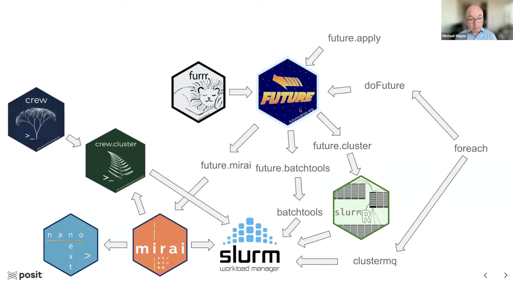

git clone --depth=1 https://github.com/giovtorres/slurm-docker-cluster.git
cd slurm-docker-clustertl;dr
Today I learned how to create a high performance compute (HPC) cluster on my local system using docker and docker-compose with the slurm-docker-cluster project. It allowed me to experiment with an HPC environment and with the SLURM scheduler - using either its native commands (e.g. srun and sbatch) or from within R (e.g. with the clustermq package) - all from the comfort of my own laptop (a Macbook Air M4 with Mac OS 26.0.1).
Motivation
This week, I watched the recording of Michael Mayer’s workshop “Selected examples on how to scale-up computations in R (by using HPC)” from the 2024 R/Pharma conference.
He covers part of the extensive R package ecosystem that allows users to execute workloads on high performance compute cluster (HPCs), e.g. using the SLURM workload manager.

Many scientific organizations use high performance compute (HPC) clusters to parallelize workloads. I wanted to refresh my memory of how to work with an HPC, e.g. using the growing set of R package that interface with different backends. I considered spinning up a cluster in the cloud, e.g. using AWS ParallelCluster, but that seemed like (potentially expensive) overkill for my learning goal. Luckily, I discovered Giovanni Torres’ slurm-docker-cluster project, which allowed me to create a small cluster that uses the SLURM scheduler using docker and docker-compose on my local system1.
This setup does not miraculously generate more compute resources, but it allows me to experiment with my very own HPC, e.g. submit jobs, write batch scripts and monitor job queues. On the way, I learned about docker-compose overrides, Rocky Linux, globally setting a CRAN mirror, and more!
Dependencies
The cluster will constitute multiple docker containers and docker volumes, so we need to have both docker and docker-compose available on our system.
Setting up a local cluster with slurm-docker-cluster
We start by cloning the latest commits from slurm-docker-cluster repository to our local system and change into its root directory.
Cloning into 'slurm-docker-cluster'...
remote: Enumerating objects: 218, done.
remote: Counting objects: 100% (141/141), done.
remote: Compressing objects: 100% (67/67), done.
remote: Total 218 (delta 96), reused 88 (delta 65), pack-reused 77 (from 2)
Receiving objects: 100% (218/218), 74.00 KiB | 658.00 KiB/s, done.
Resolving deltas: 100% (109/109), done.The project supports multiple SLURM versions, which can be configured in a .env file in the repository’s root directory. To use SLURM version 25.05.3 we copy the included example:
cp .env.example .env
cat .envExample .env file
# Slurm version (semantic version format)
# Supported versions: 25.05.x, 24.11.x
# This is used for:
# - Downloading the Slurm tarball from schedmd.com
# - Tagging the Docker image
# - Selecting version-specific configuration files
#
# Examples:
# SLURM_VERSION=25.05.3 # Latest stable (default)
# SLURM_VERSION=24.11.6 # Previous stable release
SLURM_VERSION=25.05.3
# MySQL credentials
# The defaults are only suitable for local development/testing
MYSQL_USER=slurm
MYSQL_PASSWORD=password
MYSQL_DATABASE=slurm_acct_dbTo create a high performance cluster (HPC) we first need to build the slurm-docker-cluster docker image using the repository’s Dockerfile ).
The Makefile includes a set of helpful commands, including make help to see all of them:
make helpAvailable Commands
Slurm Docker Cluster - Available Commands
==========================================
Cluster Management:
build Build Docker images
up Start containers
down Stop containers
clean Remove containers and volumes
rebuild Clean, rebuild, and start
Quick Commands:
jobs View job queue
status Show cluster status
logs Show all container logs
logs-slurmctld Show slurmctld logs
logs-slurmdbd Show slurmdbd logs
Configuration Management:
update-slurm Update config files (requires FILES="...")
reload-slurm Reload Slurm config without restart
Development & Testing:
shell Open shell in slurmctld
test Run test suite
quick-test Submit a quick test job
run-examples Run example jobs
Multi-Version Support:
version Show current Slurm version
set-version Set Slurm version (requires VER=...)
build-all Build all supported versions
test-version Test a specific version (requires VER=...)
test-all Test all supported versionsBuilding the slurm-docker-cluster image
To get started, let’s use the make build command to build the docker image, including all of SLURM and its dependencies2.
⏳ Please note that building the image from scratch takes a few minutes.
make buildOnce the image is available, we can spin up a small HPC with the make up command. The cluster consists of six docker containers, including the slurmctld head node and two compute nodes (c1 and c2).
Starting and testing the cluster
make up[+] Running 7/7
✔ Network slurm-docker-cluster_slurm-network Created
✔ Container mysql Healthy
✔ Container slurmdbd Healthy
✔ Container slurmctld Healthy
✔ Container slurmrestd Started
✔ Container c1 Started
✔ Container c2 StartedWe can get additional information about the containers and the cluster with the make status command, which shows that there is one partition (e.g. the default queue) called normal with two compute nodes.
make status=== Containers ===
NAME IMAGE COMMAND SERVICE CREATED STATUS PORTS
c1 slurm-docker-cluster:25.05.3 "/usr/local/bin/dock…" c1 About a minute ago Up 49 seconds (healthy) 6818/tcp
c2 slurm-docker-cluster:25.05.3 "/usr/local/bin/dock…" c2 About a minute ago Up 49 seconds (healthy) 6818/tcp
mysql mariadb:12 "docker-entrypoint.s…" mysql About a minute ago Up About a minute (healthy) 3306/tcp
slurmctld slurm-docker-cluster:25.05.3 "/usr/local/bin/dock…" slurmctld About a minute ago Up 54 seconds (healthy) 6817/tcp
slurmdbd slurm-docker-cluster:25.05.3 "/usr/local/bin/dock…" slurmdbd About a minute ago Up About a minute (healthy) 6819/tcp
slurmrestd slurm-docker-cluster:25.05.3 "/usr/local/bin/dock…" slurmrestd About a minute ago Up 49 seconds (healthy) 0.0.0.0:6820->6820/tcp, [::]:6820->6820/tcp
=== Cluster ===
PARTITION AVAIL TIMELIMIT NODES STATE NODELIST
normal* up infinite 2 idle c[1-2]To see our cluster in action, we can run the test suite:
make testTest results
./test_cluster.sh
================================
Slurm Docker Cluster Test Suite (v25.05.3)
================================
[TEST] Checking if all containers are running...
[INFO] ✓ mysql is running
[INFO] ✓ slurmdbd is running
[INFO] ✓ slurmctld is running
[INFO] ✓ slurmrestd is running
[INFO] ✓ 2 worker node(s) running
[PASS] All containers are running
[TEST] Testing MUNGE authentication...
[PASS] MUNGE authentication is working
[TEST] Testing MySQL database connection...
[PASS] MySQL connection successful
[TEST] Testing slurmdbd daemon...
[PASS] slurmdbd is responding and cluster is registered
[TEST] Testing slurmctld daemon...
[PASS] slurmctld is responding
[TEST] Testing compute nodes availability...
[PASS] 2 compute node(s) are available (matches expected 2)
[TEST] Testing compute nodes state...
[PASS] Compute nodes are in idle state (1 nodes)
[TEST] Testing partition configuration...
[PASS] Default partition 'normal' exists
[TEST] Testing job submission...
[INFO] Job ID: 1 submitted
[PASS] Job submitted successfully (Job ID: 1)
[TEST] Testing job execution and output...
[PASS] Job executed and produced output
[TEST] Testing job accounting...
[PASS] Job accounting is working
[TEST] Testing multi-node job allocation...
[PASS] Multi-node job executed on 2 nodes
[TEST] Testing resource limit configuration...
[PASS] Resource limits configured correctly
================================
Test Summary
================================
Tests Run: 13
Tests Passed: 13
Tests Failed: 0
✓ All tests passed!All of the tests passed!
Logging into the head node
We can log into the cluster’s head node (as root) with make shell
make shelland interact with SLURM with its command line utilities e.g. srun, sbatch, squeue, etc.
[root@slurmctld data]# sbatch --version
slurm 25.05.3Shutting down the cluster
We can shut down the cluster with the make down command. Please note that its docker volumes will persist3, e.g. files stored in the /data folder that is shared between the nodes will remain available when the cluster is started up again later.
make downAdding R and clustermq
Each of the cluster’s nodes is instantiated from the slurm-docker-cluster docker image. For scientific applications, we might need additional tooling4. In a production HPC, tools are often provided by the cluster’s administrators, e.g. using modules or package managers like spack or EasyBuild.
I am primarily interested in learning how to submit workloads from an interactive R session. But R is currently not available on any of the nodes. I could interactively install R after starting the cluster5, but because it is not part of the original docker image I would need to repeat this step every time the cluster is restarted.
Luckily, there is a more permanent solution: Because the cluster is set up using docker-compose, I can add a second configuration file (a docker-compose-override file) that inserts another docker build step before each of the containers is started.
A second Dockerfile
Let’s tackle this task in two steps. First, we create a small Dockerfile, called Dockerfile.r to distinguish it from the existing Dockerfile, based on the slurm-docker-cluster image we built with make build above.
1cat > Dockerfile.r << 'EOF'
2ARG SLURM_VERSION
FROM slurm-docker-cluster:${SLURM_VERSION}
USER root
3RUN dnf -y install epel-release \
4 && dnf -y install R-base zeromq-devel \
&& dnf clean all
5RUN cat > /usr/lib64/R/etc/Rprofile.site <<'REOF'
options(repos = c(CRAN = sprintf("https://packagemanager.posit.co/cran/latest/bin/linux/rhel9-%s/%s",
R.version["arch"], substr(getRversion(), 1, 3))))
REOF
6RUN R -q -e 'install.packages(c("clustermq", "callr"))'
EOF- 1
-
Instead of creating the
Dockerfile.rfile manually, I am writing the file using the Here Document notation, e.g. the first and last line of this code chunk are not included in the file; they redirect the enclosed content to it. - 2
-
The
SLURM_VERSIONwill be provided bydocker-compose, see below. - 3
-
The
R-basepackage for Rocky Linux (or RHEL9) is included in the Extra Packages for Enterprise Linux (EPEL) repository so we make it available first. - 4
-
Next, the
R-baseandzeromq-develpackages are added to the docker image. (ZeroMQ is a dependency of theclustermqR package.) - 5
-
To speed up the installation of R packages in the future, we can take advantage of binaries compiled for RHEL9 and hosted by Posit’s Public Package Manager. To ensure that this repository is used by default, we create the
Rprofile.sitefile, which is executed at the start of every R session. - 6
-
Because I am planning to experiment with the clustermq R package to submit jobs interactively, let’s also install it - together with its optional
callrdependency. If additional packages would be useful in the future, they could be added here as well.
Merging two docker-compose files
1cat > docker-compose.override.r.yml << 'EOF'
2x-node-build: &node-build
context: .
3 dockerfile: Dockerfile.r
args:
4 SLURM_VERSION: ${SLURM_VERSION:-25.05.3}
BASE_IMAGE: slurm-docker-cluster:${SLURM_VERSION:-25.05.3}
services:
slurmctld:
5 image: slurm-docker-cluster-r:${SLURM_VERSION:-25.05.3}
build: *node-build
c1:
image: slurm-docker-cluster-r:${SLURM_VERSION:-25.05.3}
build: *node-build
c2:
image: slurm-docker-cluster-r:${SLURM_VERSION:-25.05.3}
build: *node-build
EOF- 1
-
As above, the
docker-compose.override.r.ymlfile is created as a Here Document. - 2
-
Because we want to add the
Dockerfile.rbuild to each of the three nodes, the repetitive part of the configuration is defined in an Extension at the top of the file, defined as a YAML anchor (with thenode-buildalias), and then referenced as*node-buildin each of the services below. - 3
-
The
Dockerfile.rfile we created above (in the same directory) is used to drive the build of a new image, on top of ourBASE_IMAGE. - 4
-
The
SLURM_VERSIONargument is provided in the.envfile, which is automatically read bydocker-compose. As a fallback option, I also define version25.05.3in case it is undefined. - 5
-
The services section overrides the instructions in the original
docker-compose.ymlfile for the three (node) services and instructs them to use the modified image (based onDockerfile.r) instead. We specify a new name for the image (note the-rsuffix) to avoid overwriting the original base image.
Building the custom image
With both the Dockerfile.r and the docker-compose.override.r.yml files in place, we can trigger a rebuild of the three services.
- 1
-
We use
docker composedirectly instead ofmake buildto pass custom arguments. - 2
-
By using the
-fargument twice, we trigger the merge (override) of the two YAML files. - 3
- We specifically rebuild the three specified services (e.g. the head and compute nodes).
Afterwards, we can verify that the new images have been created and are available to instantiate containers:
docker imagesREPOSITORY TAG IMAGE ID CREATED SIZE
slurm-docker-cluster-r 25.05.3 cf033fce4f95 23 seconds ago 1.63GB
slurm-docker-cluster 25.05.3 685254b2ae7e 8 minutes ago 1.49GB
mariadb 12 d80ec225ce9d 5 days ago 357MB(Re)starting the cluster
We are ready to spin up our cluster again, this time using the new service definitions.
docker compose \ <#1>
-f docker-compose.yml \
-f docker-compose.override.r.yml \
up -d- As above, we use
docker composedirectly instead ofmake upto pass custom arguments.
Once the cluster is available, we can verify that R is available on all three nodes, e.g. by retrieving the version of the clustermq package.
- 1
- We print the node’s name to verify that the results come from the expected system.
- 2
-
The
docker exec -it $NODEcommand executes the code in the specified node, all of which are now based on theslurm-docker-cluster-rdocker image and have both R and theclustermqR package installed:
>>> Node slurmctld
[1] "clustermq 0.9.9"
>>> Node c1
[1] "clustermq 0.9.9"
>>> Node c2
[1] "clustermq 0.9.9"Interactively submitting jobs with clustermq
Now we are ready to experiment with running analysis code in a distributed fashion, e.g. parallelizing a function call across the compute nodes of our HPC cluster. We start by logging into the head node, using the make shell helper.
make shellWithin the head node, we first create the SLURM template file for clustermq, as described in the clustermq documentation. (By placing it into the shared /data directory, which is mapped to a persistent volume that is accessible from all nodes, we can reuse it even after our cluster has been shut down and restarted.)
1cat > /data/slurm.tmpl << 'EOF'.
#!/bin/sh
#SBATCH --job-name={{ job_name }}
2#SBATCH --partition=normal
#SBATCH --output={{ log_file | /dev/null }}
#SBATCH --error={{ log_file | /dev/null }}
#SBATCH --mem-per-cpu={{ memory | 4096 }}
#SBATCH --array=1-{{ n_jobs }}
#SBATCH --cpus-per-task={{ cores | 1 }}
ulimit -v $(( 1024 * {{ memory | 4096 }} ))
CMQ_AUTH={{ auth }} R --no-save --no-restore -e 'clustermq:::worker("{{ master }}")'
EOF- 1
- As above, we write the file using a Here Document.
- 2
-
Our cluster has only one (default) partition called
normal, but we specify it here just for future reference.
Next, still within the shell of the head node, we start an interactive R session.
R --vanillaIn R, we first attach the clustermq package, which sends function calls as jobs to the compute cluster. Its Q() function does all of the heavy lifting.
First, we define a simple test function that returns the name of the node it is executed on, followed by a user-provided index.
Multiprocess execution
First, let’s run the code only on the local cores of the head node, by specifying the multiprocess scheduler. We provide ten indices (i), triggering ten parallel executions using the two cores available to the slurmctld node.
library(clustermq)
options(
clustermq.scheduler = "multiprocess"
)
test_fun <- function(i) {
paste(Sys.info()[["nodename"]], i)
}
res <- Q(
fun = test_fun,
i = 1:10,
n_jobs = 2,
timeout = 60
)
print(res)As expected, each of the returned results reports that it was obtained from the slurmctld node.
Results
Starting 2 processes ...
Running 10 calculations (5 objs/20.1 Kb common; 1 calls/chunk) ...
Master: [0.3 secs 32.7% CPU]; Worker: [avg 100.4% CPU, max 231.6 Mb]
[[1]]
[1] "slurmctld 1"
[[2]]
[1] "slurmctld 2"
[[3]]
[1] "slurmctld 3"
[[4]]
[1] "slurmctld 4"
[[5]]
[1] "slurmctld 5"
[[6]]
[1] "slurmctld 6"
[[7]]
[1] "slurmctld 7"
[[8]]
[1] "slurmctld 8"
[[9]]
[1] "slurmctld 9"
[[10]]
[1] "slurmctld 10"Great, that worked. Now let’s use the SLURM scheduler to run the jobs on the two compute nodes (c1 and c2).
- 1
-
We instruct
clustermqto use theslurmscheduler - 2
-
Using the
/data/slurm.tmplfile we generated above.
The results are now generated on the two compute nodes:
Results
Submitting 2 worker jobs to SLURM as ‘cmq8141’ ...
Running 10 calculations (5 objs/20.1 Kb common; 1 calls/chunk) ...
Master: [0.7 secs 1.4% CPU]; Worker: [avg 51.5% CPU, max 230.4 Mb]
[[1]]
[1] "c1 1"
[[2]]
[1] "c1 2"
[[3]]
[1] "c2 3"
[[4]]
[1] "c1 4"
[[5]]
[1] "c2 5"
[[6]]
[1] "c1 6"
[[7]]
[1] "c2 7"
[[8]]
[1] "c1 8"
[[9]]
[1] "c2 9"
[[10]]
[1] "c2 10"Success! We have successfully executed our simple test function within the HPC cluster.
We can quit the interactive R session
q()and then log out of the head node by exiting the shell.
exitCleanup
First, let’s stop the containers that make up our small HPC.
make downdocker compose down
[+] Running 7/7
✔ Container c2 Removed 0.1s
✔ Container slurmrestd Removed 1.2s
✔ Container c1 Removed 0.2s
✔ Container slurmctld Removed 0.1s
✔ Container slurmdbd Removed 0.1s
✔ Container mysql Removed 0.4s
✔ Network slurm-docker-cluster_slurm-network Removed 0.3sNext, we clean up the persistent volumes that were created by docker-compose.
make cleandocker compose down -v
[+] Running 5/5
✔ Volume slurm-docker-cluster_var_log_slurm Removed 0.0s
✔ Volume slurm-docker-cluster_etc_munge Removed 0.0s
✔ Volume slurm-docker-cluster_etc_slurm Removed 0.0s
✔ Volume slurm-docker-cluster_slurm_jobdir Removed 0.0s
✔ Volume slurm-docker-cluster_var_lib_mysql Removed 0.0s If we don’t want to spin the cluster back up in the future, we can also remove the four docker images that we created, releasing storage on the system.
docker rmi \
slurm-docker-cluster:25.05.3 \
slurm-docker-cluster-r:25.05.3 \
mariadb:12We could also decide to clean the docker build cache, freeing even more disk capacity. (But please beware that this will remove the entire docker cache, not just layers associated with this tutorial).
docker buildx prune --all --force
This work is licensed under a Creative Commons Attribution 4.0 International License.
Footnotes
An M4 Macbook with a 10-core CPU and 16 GB of RAM.↩︎
The image is based on the highly stable Rocky Linux (v9) distribution.↩︎
The persistent volumes are:
↩︎- etc_munge: Mounted to /etc/munge - Authentication keys - etc_slurm: Mounted to /etc/slurm - Configuration files (allows live editing) - slurm_jobdir: Mounted to /data - Job files shared across all nodes - var_lib_mysql: Mounted to /var/lib/mysql - Database persistence - var_log_slurm: Mounted to /var/log/slurm - Log filesTrevor Vincent maintains the awesome-high-perfomance-computing list of resources.↩︎
For example, with the cluster running, I could execute the installation instructions within the three nodes with the
docker execcommand:
↩︎for NODE in slurmctld c1 c2 do docker exec -it $NODE bash -lc "yum install -y epel-release R-base" done